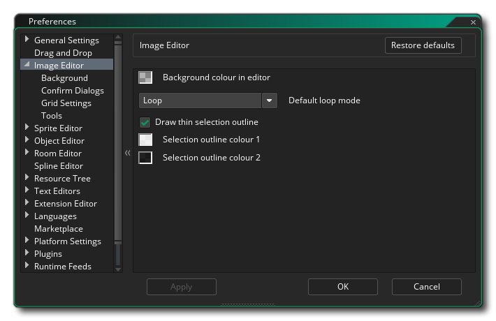
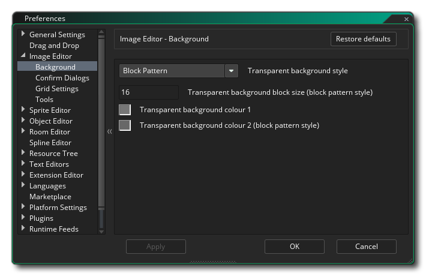
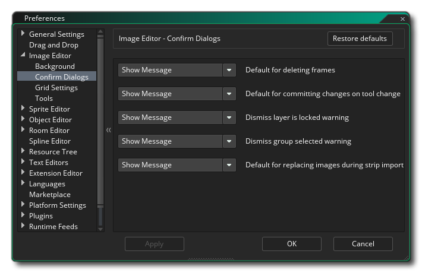
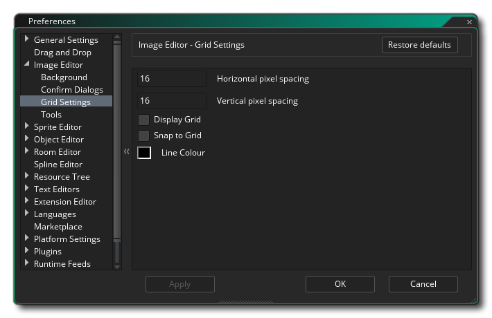
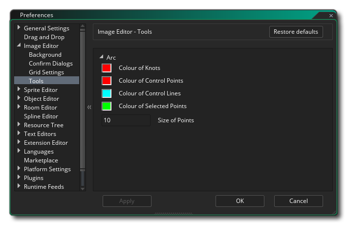

The Image Editor Preferences are used to define how the sprite and image editor windows look and feel. The following are the general options:
The Image Editor Preferences also has the following sub-categories:
- Default Loop Mode: The loop button in the Image Editor can be set to function in two different modes: either play once, where the animation will stop when it gets to the last frame, loop from the start, where the animation will go back to the first frame when it finishes, or ping pong, where the animation will go up through the images to the end and then back down through them again to the beginning. The default value here is "loop".
- Draw thin selection outline: If this is checked then the outline for selections will be an absolute 1px in width, regardless of the scale of the image, while having it un-checked will make the selection outline a relative 1px in width and scale with the image. The default is to have this option checked.
- Selection outline primary colour: The section outline is a dashed line that alternates between two colours. This option permits you to set the first of those colours to use (inlcuding alpha), and has a default value of #FFFFFD0.
- Selection outline secondary colour: The section outline is a dashed line that alternates between two colours. This option permits you to set the second of those colours to use (inlcuding alpha), and has a default value of #0000D0.
- Editor background colour: While editing a sprite frame the image may be scaled in or out or may not fit the whole drawing in window, in which case a background colour will be shown which you can set here. The default value is #282828FF.
Here you can set the options for the background that you edit your sprite images over. By default this is a grid of grey squares, but you can use the following settings to change it:
- Canvas style - Here you set the "style" for the background, which can either be "Block Pattern" or "Single Colour". Single colour simply sets the background to the colour of your choice (using the Colour 1 setting, as explained below) while block pattern is the default setting (which can also be edited using the rest of the dialogue options shown below). Default is "Block Pattern".
- Canvas block size - When you have selected Block Pattern for the background, you can set the size of the individual block here. Default is 16px, with a minimum value of 2px and a maximum of 256px permitted.
- Canvas primary colour - If you have Single Colour chosen for the background, then the colour used is this one. You can click the colour swatch to open the colour editor and change it. When using the Block Pattern option, this sets the first colour for alternate blocks. Default colour is (rgba) #c3c3c3ff.
- Canvas secondary colour (block pattern style) - If you have Block Pattern chosen for the background, then the colour used to alternate with colour 1 (above) is this one. You can click the colour swatch to open the colour editor and change it. Default colour is (rgba) #808080ff.
Here you can select the behaviour of the confirmation dialogues when you perform different actions on the current sprite. They are:
- Automatic response to deleting frames - When you delete a frame by default a message shows to ask if you are sure you want to do this. By setting this option to "OK" you can remove this message and permit frame deletion without further messages being shown. Default is "Show message".
- Automatic response to replacing images during strip import - When you select Import Strip from the Image drop down menu, you will get a message warning you that you will be overwriting any images already in the sprite resource, with the option to continue or not. You can set here whether to show this message, or have the IDE simply choose the "Yes" or "No" option. The default value is "Show Message".
- Automatic response to committing changes on tool change - When you change draw tools after editing a frame, by default a message shows to ask if you want to commit the changes made. By setting this option to "OK" you can remove this message and permit frame edition to be committed without further messages being shown when you change tools. If you choose "No", then frame edition will be silently cancelled when you change tools. Default is "Show message".
- Automatic response to locked layer warning - If you try to edit a locked layer you'll get a message by default informing you that you can't do this. If you set this option to "OK" then no message will be shown and the edition will silently fail.
- Automatic response to group selected warning - If you select multiple layers in the layer editor and then try to draw or edit then you will be shown a message by default to inform you that it is not possible. You can select "OK" here to remove this message and silently fail to edit the images together until only a single layer is selected. Default is "Show message".
The Grid Settings preferences are used to set how the image grid will be presented, with the following options available:
- Grid horizontal spacing (px) - This value sets the spacing for the horizontal lines of the image grid. The default value is 1px.
- Grid vertical spacing (px) - This value sets the spacing for the vertical lines of the image grid. The default value is 1px.
- Display Grid - If this is checked then the Image Editor will open with the image grid on. Default is off.
- Snap To Grid - If this is checked then the image editor will automatically snap certain tools to the image grid. Default is off.
- Grid line Colour - Here you can set the colour (including alpha value) for the image grid. Default is #000000FF.
Here you can set the ddifferent options for how some of the drawing tools operate and are shown.
If you are using the Arc Tool
then here you can set the different colours used to draw the node properties:
- Anchor point colour - Set the colour for the different anchor points on the spline/arc. Default is (rgba) #FF0000FF.
- Control point colour - Set the colour for each of the control point "handles" on an anchor point. Default is (rgba) #FF0000FF.
- Tangent line colour - Set the colour for the lines linking the control points to the anchors. Default is (rgba) #00FFFFFF.
- Selected point colour - Set the colour to be used for any selected anchor points on the spline/arc. Default is (rgba) #00FF00FF.
- Point size - Set the size of the different anchor points and control points to be used. Default is 10px.